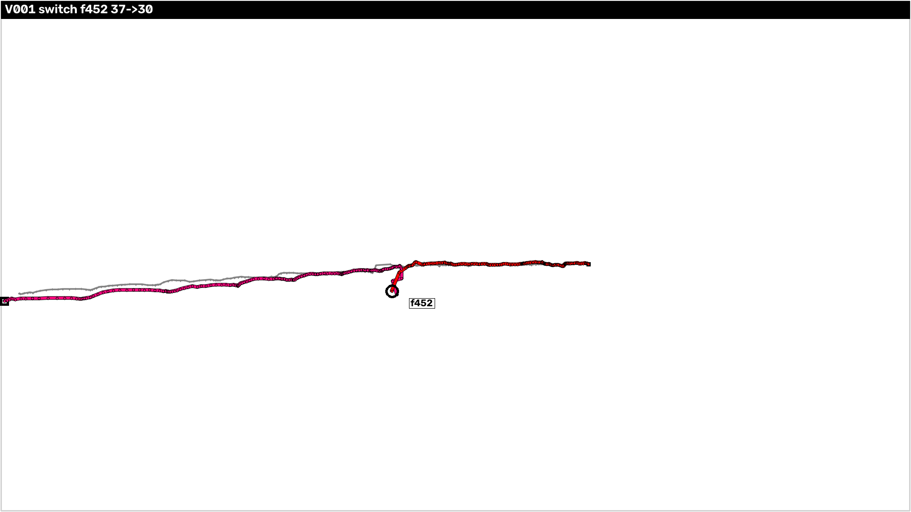
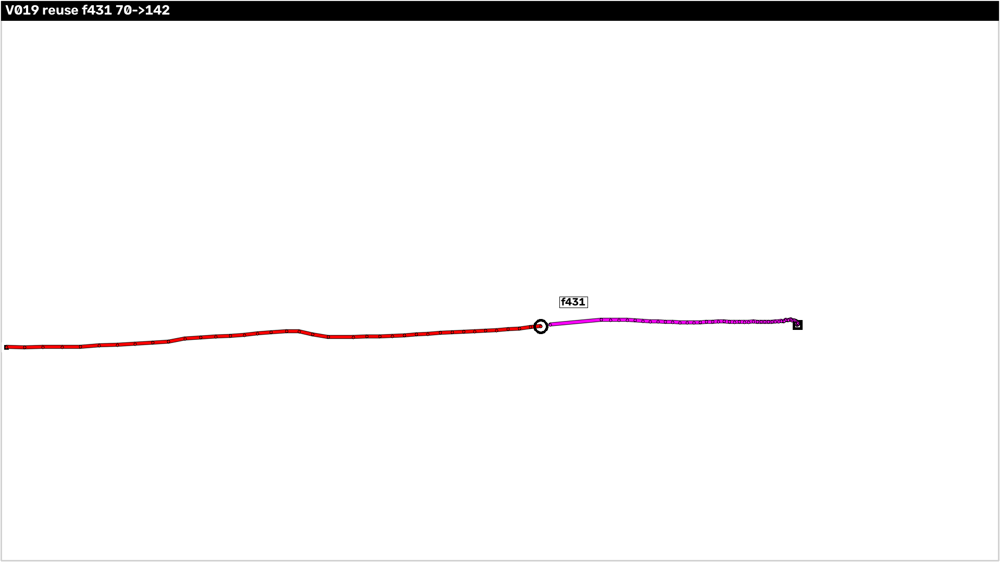
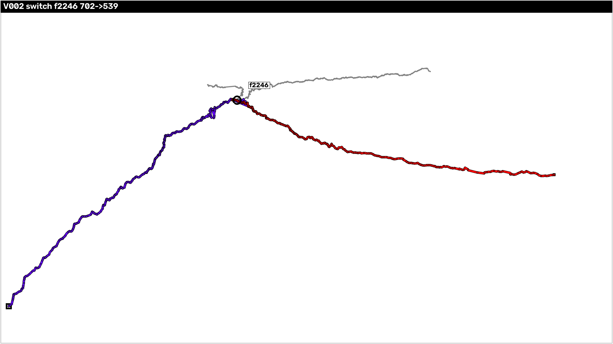
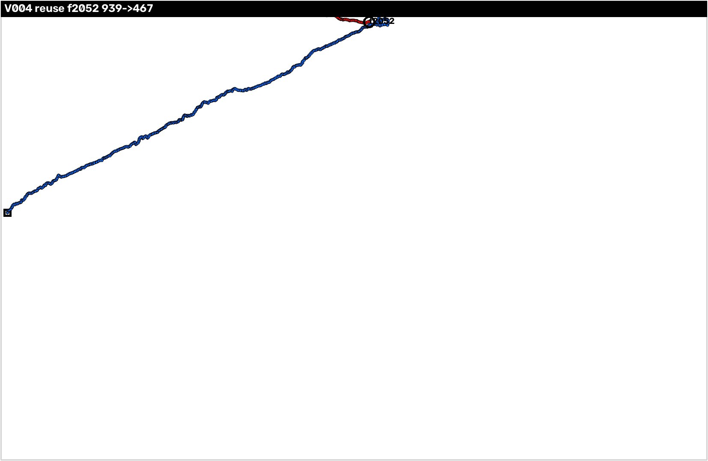
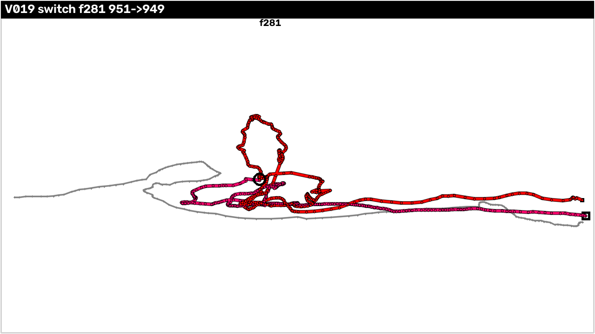
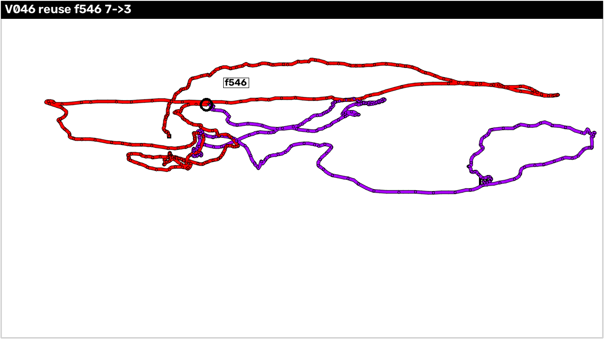

总览
ByteTrack 在 MOT17 / MOT20 / SportsMOT 三个数据集上的 ID 切换(switch)与 ID 复用(reuse)事件分析 · 全量评估与可视化分析已完成
交付任务完成情况
| # | 任务要求 | 完成情况 | 本报告位置 |
|---|---|---|---|
| 1 | 预测 bbox 绘制到图像并合成视频(同 ID 同色 + 数字 ID);找出全部 ID 切换时刻,每数据集给出典型例子 | 已完成 115 个视频;7,033 条事件;12 个典型例子 | 任务1 |
| 2 | 预测 bbox 绘制到白布(无背景),附例子 | 已完成 2 序列全序列视频 + 事件窗口 | 任务2 |
| 3 | 统计 ID 切换时刻指标分布(IoU、x/y 位移、欧式距离等) | 已完成 7,033 事件全量逐事件指标 + 分布统计 | 任务3 |
| 4 | 发生切换的 ID 全程轨迹绘制到一张图,切换前/后两色 | 已完成 6 张轨迹图(每数据集 switch + reuse 各 1) | 任务4 |
实验设置
| 数据集 | 序列数(有 GT) | 帧数 | 权重 | track_thresh | match_thresh | track_buffer | MOTA | IDF1 | IDs |
|---|---|---|---|---|---|---|---|---|---|
| MOT17 街景 | 21 | 7,977 | bytetrack_x_mot17 | 0.6 | 0.9 | 30 | 90.2% | 86.0% | 546 |
| MOT20 密集人群 | 4 | 8,931 | bytetrack_x_mot20 | 0.3 | 0.9 | 30 | 92.8% | 87.6% | 1,600 |
| SportsMOT 运动场 | 90 | 55,544 | bytetrack_x_sportsmot | 0.5 | 0.8 | 60 | 97.1% | 74.8% | 2,567 |
MOT17 评测段为 val_half(帧 301-600);MOT20 / SportsMOT 为全帧。MOTA 表内 IDs 指标即 num_switches,与本报告 switch 事件逐序列一致。MOTA/IDF1/IDs 为 2026-08-16 按清洗后 GT(conf==1)重算。
两种事件的定义(与 motmetrics 机器判定一致)
- switch ID 切换:同一 GT 目标(如 gt31)之前由 tracker A 跟踪,本帧被匹配给 tracker B —— "同一个被跟踪目标换了一个 tracker ID"(motmetrics 的
SWITCH事件,数量逐序列与num_switches指标 100% 一致)。 - reuse ID 复用:同一个 tracker ID 先分配给目标 A,之后又被分配给目标 B —— "新物体配置了旧 ID"(对每个 tracker 的 MATCH 事件按帧序扫描,GT 对象发生 A→B 变化即在 B 首次匹配帧记一条事件)。
匹配口径:GT 与预测经 motmetrics compare_to_groundtruth(gt, ts, 'iou', distth=0.5) 关联,IoU ≥ 0.5 视为关联;仅统计有 GT 的序列(21 + 4 + 90 = 115)。
事件总数(115 序列)
| 数据集 | switch | reuse | num_switches 复算 | 交叉验证 |
|---|---|---|---|---|
| MOT17 | 546 | 537 | 546 | 21/21 一致 |
| MOT20 | 1,600 | 1,021 | 1,600 | 4/4 一致 |
| SportsMOT | 2,567 | 762 | 2,567 | 90/90 一致 |
| 合计 | 4,713 | 2,320 | 4,713 | 115/115 一致 |
switch 总数与 MOTA 表 IDs 指标(546 / 1,600 / 2,567)完全一致,独立流程双重印证;完整事件表见附录(可检索,共 7,033 行)。
任务1 · bbox 可视化视频与 ID 切换事件
预测框绘制到原图并合成视频(同 ID 恒定同色、框上数字 ID)+ 全部 ID 切换时刻 + 每数据集典型例子
可视化视频规格
| 项 | 说明 |
|---|---|
| 数量 | 115 个 mp4(MOT17 21 / MOT20 4 / SportsMOT 90),原图分辨率不变(MOT17/MOT20 约 1920×1080,SportsMOT 约 1280×720) |
| 帧率 | 30 fps(假设——序列无 fps 元数据,统一 30) |
| 颜色 | 黄金角着色 hue = (id × 137.5) mod 180:同 ID 恒定同色,相邻 ID 色差 ≥ 42.5° |
| 标注 | 框 + 黑底白字数字 ID;重叠拥挤场景后画框覆盖先画框边框属正常现象 |
| 帧范围 | MOT17 为 val_half 评测段(301-600,因序列而异);MOT20 / SportsMOT 为全帧 |
完整视频清单见附录;本报告另打包 7 个典型序列的完整视频(附录 · 完整序列示例视频)。
典型例子(每数据集 4 个:2 switch + 2 reuse)
每个例子的动画为事件帧前后各 15 帧共 31 帧的标注图(与视频同色体系,涉及 tracker 加粗);下方 IoU 为事件帧数值,可切换页面顶部的「视频片段」链接单独播放。播放器初始定位在事件帧(红色标记)。
MOT17(val_half 段)
MOT20(全帧)
SportsMOT(全帧)
全部 115 个序列的完整跟踪视频位于项目 YOLOX_outputs/{mot17|mot20|sportsmot}_v001_full/track_videos/(附录附完整清单与文件大小);事件帧 ±15 帧的 372 张标注图(JPEG)见本报告 assets/examples/。115 个全序列跟踪视频的原始文件已精简删除(2026-08-03),清单与大小见附录(本报告打包 7 个典型序列于 assets/videos/)。视频帧率 30fps 为假设,如需原速播放可按真实帧率重新编码。
任务2 · 白布可视化(无背景检测框图)
预测 bbox 绘制到纯白画布 —— 一张图只显示检测框、没有背景信息,每数据集给出例子
口径定义
| 项 | 口径 |
|---|---|
| 白布 | 纯白 255 图像,尺寸 = 原图 W×H,检测框坐标保真(不缩放、不偏移) |
| 颜色 | 与视频相同的黄金角着色 hue=(id×137.5) mod 180,两套可视化可直接对照 |
| 描边 | 所有框带黑色描边(高饱和蓝/黄等颜色在白底亮度差仅 29,黑描边保证任何颜色可读) |
| 标注 | 框 + 黑底白字数字 ID(与视频相同标签条样式) |
| 帧率 / 编码 | 30 fps(假设);PNG + mp4v 编码 |
程序化验证(verify_canvas.py):四角纯白、框位置与 txt 逐行一致、同 ID 跨帧同色、描边带黑/彩像素足量、mp4 帧数与 PNG 数一致 —— 全部通过。
例子一 · MOT17 V013(MOT17-10-DPM,街道场景)
全序列白布视频:帧 328-654 共 327 帧,1920×1080,30fps(约 1.9 MB PNG 版源文件 327 张)
白布视图下,全部检测框从画面中出现到离开的几何轨迹一目了然 —— 人物框沿街道方向连续移动,尺寸随远近变化,框数(拥挤度)随帧波动;数字 ID 恒定同色,可逐框追踪"哪个颜色走到哪里"。
事件窗口 f330-360(switch 例,事件帧 f345:gt31 从 735 换色为 737)
31 帧白布事件窗口(每帧 1 张 PNG);另提供 ▶ 视频片段
f345 处可见 gt31 身上的框从 tracker 735 的颜色瞬间换成 737 的颜色,而旧 735 的颜色仍在画面其他位置移动 —— "目标换色"事件在白布上比原图更突出,因为没有背景干扰注意力。
例子二 · SportsMOT V019(篮球场)
全序列白布视频:帧 1-1825 共 1,825 帧,1280×720,30fps
10 名运动员快速折返跑动,框的位置变化形成明显的往复轨迹线条感;空帧与拥挤帧交替的节奏清晰;同色球衣的运动员在无背景白布上只能靠框色(ID)区分,更直观地暴露"颜色即身份"的跟踪逻辑。
事件窗口 f266-296(switch 例,事件帧 f281:gt9 从 951 换色为 949)
31 帧白布事件窗口;另提供 ▶ 视频片段
f281 处可见目标 9 的框从 tracker 951 换色为 949,旧 951 的框仍在其左侧跟踪另一名运动员 —— 两条快速跑动轨迹交叉后"颜色互换",白布版中这一形态非常直观。
全序列白布 PNG(2,152 张)位于项目 YOLOX_outputs/analysis/canvas/{V013|V019}/,事件窗口 PNG 位于 canvas/examples/{V013|V019}/;生成脚本 tools/draw_boxes_canvas.py(含 --no-label 只画框模式)。
任务3 · ID 切换时刻指标统计
同一 ID 的检测框在事件帧与上次出现帧之间的 IoU、x/y 位移、欧式距离等指标分布 · 全量 7,033 事件
指标口径(对应任务示例)
| 指标 | 定义 | 示例映射 |
|---|---|---|
| F / F_l / gap | 事件帧 F;F_l = 该 tracker 在 <F 帧的最后出现帧;gap = F − F_l | 事件帧 100 帧 = F;上次出现 90 帧 = F_l;gap = 10 |
| IoU_last | IoU(tid@F_l, tid@F) | 第 90 帧与第 100 帧同 ID 框的 IoU |
| dx_last / dy_last | 中心点位移(带符号):cx@F − cx@F_l | x 方向位移、y 方向位移 |
| dist_last | 欧氏距离 √(dx² + dy²) | 欧式距离 |
| IoU_prev / IoU_next | IoU(tid@F−1, tid@F) / IoU(tid@F, tid@F+1) —— 相邻帧连续性 | — |
| IoU_swap / dist_swap | 仅 switch:事件帧上新旧两个 tracker 的 IoU 与中心距 | — |
| area_ratio | area(tid@F) / area(tid@F_l) | — |
NA 语义:tid 在 <F 从未出现(新初始化 tracker 直接接管)→ 无 F_l,相关指标全部为空;F−1 / F+1 无该 tid 框 → no_prev / no_next;switch 的旧 tracker 在 F 无框 → no_old。分布统计前已剔除 NA。
核心结论(switch vs reuse)
一句话对比:switch 中只有 61.2% 的事件能算"上一次出现"指标(IoU_last 中位 0.776、位移中位 6.5 px、gap 中位 1 但 >5 帧占 19.2%),大量事件是新 ID 直接初始化接管;reuse 则 100% 有历史且 94.2% 是"上一帧还在旧目标上、下一帧顶替到新目标"(IoU_last 中位 0.858、位移中位 4.0 px、gap=1 占 94.2%)。
- 结构差异最大 —— NA 率:switch 38.8% vs reuse 0%。switch 每 3 个事件就有 1 个以上是事件帧才出现的全新 ID(冷启动接管);reuse 按定义必有历史。
- 接管距离:switch 的 IoU_last 中位 0.776 低于 reuse 的 0.858,dist_last 中位 6.5 px 高于 reuse 的 4.0 px;长尾更明显(switch P90 dist_last 44.7 px vs reuse 17.8 px)。
- gap 分布:switch 均值 3.7、>5 帧占 19.2%(任务示例 gap=10 属此类 —— tracker 丢失约 10 帧后重新出现并被重新关联);reuse 均值 1.5、>5 帧仅 2.9%。
- 相邻帧连续性几乎相同(IoU_prev/IoU_next ≈ 0.74-0.81):事件帧前后 tracker 自身运动连续,ID 变化是瞬间的"身份切换"而非轨迹断裂。
- SportsMOT 特殊性:switch 的 IoU_last 均值仅 0.525(其他数据集 0.65-0.77)、NA 率 56.3% —— 快速运动下 tracker 寿命短、重新初始化频繁,ID 切换衔接质量最低。
- 数据集共性:MOT20(人群)两种事件 IoU 都最高(目标慢、框稳定,切换多因遮挡/交叉);MOT17 居中;SportsMOT 最低。
NA 情形统计(7,033 事件)
| 数据集 | 事件数 | no_last_seen | 占比 |
|---|---|---|---|
| MOT17 | 546 | 123 | 22.5% |
| MOT20 | 1,600 | 259 | 16.2% |
| SportsMOT | 2,567 | 1,446 | 56.3% |
| switch 合计 | 4,713 | 1,828 | 38.8% |
| reuse 合计 | 2,320 | 0 | 0% |
reuse 的 NA=0 是定义使然:reuse 由"tracker 换了 MATCH 目标"触发,tracker 必然在事件帧前已有历史。SportsMOT 的 switch NA 高达 56.3%:快速运动 + 运动员外观相似导致 tracker 频繁重新初始化,直接以新 ID 接管目标。
gap 分布(F − F_l)
| 数据集 / 类型 | 有 F_l 事件数 | gap=1 | gap=2 | gap=3-5 | gap>5 |
|---|---|---|---|---|---|
| MOT17 switch | 423 | 58.2% | 3.5% | 10.6% | 27.7% |
| MOT17 reuse | 537 | 89.4% | 2.8% | 2.8% | 5.0% |
| MOT20 switch | 1,341 | 70.3% | 6.5% | 9.5% | 13.7% |
| MOT20 reuse | 1,021 | 94.1% | 1.4% | 1.3% | 3.2% |
| SportsMOT switch | 1,121 | 63.3% | 5.0% | 9.2% | 22.5% |
| SportsMOT reuse | 762 | 97.6% | 0.1% | 1.2% | 1.0% |
| 合并 switch | 2,885 | 65.8% | 5.5% | 9.5% | 19.2% |
| 合并 reuse | 2,320 | 94.2% | 1.3% | 1.6% | 2.9% |
任务示例"第 90 帧出现、第 100 帧切换"(gap=10)属于 switch 的 >5 帧类(占 19.2%);最常见形态是 gap=1(上一帧还在画面中)。
指标分布表(mean / std / 分位数,按数据集 × 类型)
以下表格由 tools/id_switch_metrics.py 自动生成(switch_metrics/_tables.md),分布统计前已剔除 NA;IoU_swap / dist_swap 仅 switch 有定义。
MOT17 switch
MOT17 switch (N=546 events)
| metric | N | mean | std | min | P25 | P50 | P75 | P90 | max |
|---|---|---|---|---|---|---|---|---|---|
| IoU_last | 423 | 0.6477 | 0.2850 | 0.0000 | 0.5003 | 0.7505 | 0.8746 | 0.9183 | 0.9943 |
| dx_last | 423 | -2.0152 | 26.8088 | -132.9500 | -5.9500 | -0.4000 | 6.1500 | 19.4500 | 75.6500 |
| dy_last | 423 | 0.2138 | 7.8364 | -40.3500 | -1.6000 | 0.2500 | 2.4000 | 6.0500 | 45.7000 |
| dist_last | 423 | 15.7921 | 23.1265 | 0.1118 | 2.4622 | 7.1063 | 14.9106 | 40.5946 | 133.1212 |
| IoU_prev | 246 | 0.8111 | 0.1404 | 0.3630 | 0.7705 | 0.8548 | 0.9060 | 0.9419 | 0.9943 |
| IoU_next | 525 | 0.8244 | 0.1340 | 0.3601 | 0.7705 | 0.8608 | 0.9123 | 0.9537 | 0.9929 |
| IoU_swap | 315 | 0.3203 | 0.2300 | 0.0000 | 0.1445 | 0.3344 | 0.4103 | 0.5389 | 1.0000 |
| dist_swap | 315 | 29.2046 | 23.2640 | 0.0000 | 14.6219 | 22.3791 | 39.9407 | 55.9504 | 175.5501 |
| area_ratio | 423 | 1.0258 | 0.2097 | 0.3538 | 0.9366 | 1.0086 | 1.0911 | 1.1717 | 2.0896 |
| gap | 423 | 4.6028 | 6.1585 | 1.0000 | 1.0000 | 1.0000 | 6.0000 | 13.0000 | 30.0000 |
| metric | missing | of events | ratio |
|---|---|---|---|
| IoU_last | 123 | 546 | 22.53% |
| dx_last | 123 | 546 | 22.53% |
| dy_last | 123 | 546 | 22.53% |
| dist_last | 123 | 546 | 22.53% |
| IoU_prev | 300 | 546 | 54.95% |
| IoU_next | 21 | 546 | 3.85% |
| IoU_swap | 231 | 546 | 42.31% |
| dist_swap | 231 | 546 | 42.31% |
| area_ratio | 123 | 546 | 22.53% |
| gap | 123 | 546 | 22.53% |
gap = F - last_frame (events with a last frame: 423)
| range | count | ratio |
|---|---|---|
| 1 | 246 | 58.16% |
| 2 | 15 | 3.55% |
| 3-5 | 45 | 10.64% |
| >5 | 117 | 27.66% |
MOT17 reuse
MOT17 reuse (N=537 events)
| metric | N | mean | std | min | P25 | P50 | P75 | P90 | max |
|---|---|---|---|---|---|---|---|---|---|
| IoU_last | 537 | 0.7715 | 0.2232 | 0.0000 | 0.6910 | 0.8577 | 0.9137 | 0.9512 | 0.9929 |
| dx_last | 537 | -1.8545 | 12.1611 | -78.9000 | -3.1500 | -0.1500 | 1.7000 | 6.5400 | 35.5000 |
| dy_last | 537 | -0.1433 | 4.7993 | -33.4500 | -1.2000 | 0.1000 | 1.3500 | 3.0000 | 19.2000 |
| dist_last | 537 | 7.2809 | 11.0170 | 0.1581 | 1.5435 | 3.3354 | 7.6577 | 17.9404 | 79.1316 |
| IoU_prev | 480 | 0.8211 | 0.1429 | 0.2860 | 0.7639 | 0.8701 | 0.9186 | 0.9525 | 0.9929 |
| IoU_next | 501 | 0.8327 | 0.1467 | 0.2648 | 0.7862 | 0.8728 | 0.9305 | 0.9615 | 0.9889 |
| IoU_swap | NA | - | - | - | - | - | - | - | - |
| dist_swap | NA | - | - | - | - | - | - | - | - |
| area_ratio | 537 | 1.0599 | 0.5443 | 0.1988 | 0.9640 | 1.0012 | 1.0421 | 1.1114 | 6.2184 |
| gap | 537 | 1.8436 | 3.6553 | 1.0000 | 1.0000 | 1.0000 | 1.0000 | 2.0000 | 31.0000 |
| metric | missing | of events | ratio |
|---|---|---|---|
| IoU_last | 0 | 537 | 0.00% |
| dx_last | 0 | 537 | 0.00% |
| dy_last | 0 | 537 | 0.00% |
| dist_last | 0 | 537 | 0.00% |
| IoU_prev | 57 | 537 | 10.61% |
| IoU_next | 36 | 537 | 6.70% |
| IoU_swap | 537 | 537 | 100.00% |
| dist_swap | 537 | 537 | 100.00% |
| area_ratio | 0 | 537 | 0.00% |
| gap | 0 | 537 | 0.00% |
gap = F - last_frame (events with a last frame: 537)
| range | count | ratio |
|---|---|---|
| 1 | 480 | 89.39% |
| 2 | 15 | 2.79% |
| 3-5 | 15 | 2.79% |
| >5 | 27 | 5.03% |
MOT20 switch
MOT20 switch (N=1600 events)
| metric | N | mean | std | min | P25 | P50 | P75 | P90 | max |
|---|---|---|---|---|---|---|---|---|---|
| IoU_last | 1341 | 0.7706 | 0.2282 | 0.0000 | 0.7090 | 0.8650 | 0.9266 | 0.9607 | 0.9930 |
| dx_last | 1341 | 0.4004 | 11.9496 | -113.8000 | -1.6500 | 0.4000 | 2.8000 | 7.5000 | 103.3000 |
| dy_last | 1341 | -0.9969 | 14.1780 | -94.0000 | -2.3000 | -0.1500 | 1.5000 | 5.6000 | 121.5500 |
| dist_last | 1341 | 9.6939 | 15.8427 | 0.0500 | 1.7889 | 3.8243 | 8.7928 | 28.5586 | 121.5641 |
| IoU_prev | 943 | 0.8598 | 0.1305 | 0.2042 | 0.8294 | 0.8950 | 0.9411 | 0.9674 | 0.9930 |
| IoU_next | 1471 | 0.8907 | 0.0873 | 0.2788 | 0.8578 | 0.9132 | 0.9500 | 0.9695 | 0.9976 |
| IoU_swap | 749 | 0.4132 | 0.2322 | 0.0000 | 0.2799 | 0.4029 | 0.4998 | 0.6545 | 1.0000 |
| dist_swap | 749 | 31.0714 | 33.0418 | 0.0000 | 16.2415 | 24.2432 | 36.1000 | 55.2933 | 502.5260 |
| area_ratio | 1341 | 1.0331 | 0.2468 | 0.1791 | 0.9642 | 1.0056 | 1.0534 | 1.1535 | 4.1573 |
| gap | 1341 | 3.0671 | 5.1279 | 1.0000 | 1.0000 | 1.0000 | 2.0000 | 8.0000 | 53.0000 |
| metric | missing | of events | ratio |
|---|---|---|---|
| IoU_last | 259 | 1600 | 16.19% |
| dx_last | 259 | 1600 | 16.19% |
| dy_last | 259 | 1600 | 16.19% |
| dist_last | 259 | 1600 | 16.19% |
| IoU_prev | 657 | 1600 | 41.06% |
| IoU_next | 129 | 1600 | 8.06% |
| IoU_swap | 851 | 1600 | 53.19% |
| dist_swap | 851 | 1600 | 53.19% |
| area_ratio | 259 | 1600 | 16.19% |
| gap | 259 | 1600 | 16.19% |
gap = F - last_frame (events with a last frame: 1341)
| range | count | ratio |
|---|---|---|
| 1 | 943 | 70.32% |
| 2 | 87 | 6.49% |
| 3-5 | 127 | 9.47% |
| >5 | 184 | 13.72% |
MOT20 reuse
MOT20 reuse (N=1021 events)
| metric | N | mean | std | min | P25 | P50 | P75 | P90 | max |
|---|---|---|---|---|---|---|---|---|---|
| IoU_last | 1021 | 0.8525 | 0.1628 | 0.0000 | 0.8309 | 0.9052 | 0.9455 | 0.9682 | 0.9976 |
| dx_last | 1021 | 0.5165 | 8.1001 | -71.0000 | -1.0000 | 0.3500 | 1.7500 | 3.9000 | 130.5500 |
| dy_last | 1021 | -0.4348 | 11.3402 | -162.0000 | -1.5000 | -0.2000 | 1.0500 | 3.7000 | 79.3500 |
| dist_last | 1021 | 5.9872 | 12.6024 | 0.0500 | 1.2748 | 2.5739 | 5.1442 | 11.4395 | 162.0170 |
| IoU_prev | 961 | 0.8766 | 0.1141 | 0.2534 | 0.8503 | 0.9108 | 0.9470 | 0.9686 | 0.9976 |
| IoU_next | 986 | 0.8922 | 0.0824 | 0.3809 | 0.8590 | 0.9142 | 0.9497 | 0.9697 | 0.9945 |
| IoU_swap | NA | - | - | - | - | - | - | - | - |
| dist_swap | NA | - | - | - | - | - | - | - | - |
| area_ratio | 1021 | 1.0085 | 0.1521 | 0.5728 | 0.9648 | 0.9990 | 1.0301 | 1.0760 | 3.6990 |
| gap | 1021 | 1.5642 | 3.5635 | 1.0000 | 1.0000 | 1.0000 | 1.0000 | 1.0000 | 64.0000 |
| metric | missing | of events | ratio |
|---|---|---|---|
| IoU_last | 0 | 1021 | 0.00% |
| dx_last | 0 | 1021 | 0.00% |
| dy_last | 0 | 1021 | 0.00% |
| dist_last | 0 | 1021 | 0.00% |
| IoU_prev | 60 | 1021 | 5.88% |
| IoU_next | 35 | 1021 | 3.43% |
| IoU_swap | 1021 | 1021 | 100.00% |
| dist_swap | 1021 | 1021 | 100.00% |
| area_ratio | 0 | 1021 | 0.00% |
| gap | 0 | 1021 | 0.00% |
gap = F - last_frame (events with a last frame: 1021)
| range | count | ratio |
|---|---|---|
| 1 | 961 | 94.12% |
| 2 | 14 | 1.37% |
| 3-5 | 13 | 1.27% |
| >5 | 33 | 3.23% |
SportsMOT switch
SportsMOT switch (N=2567 events)
| metric | N | mean | std | min | P25 | P50 | P75 | P90 | max |
|---|---|---|---|---|---|---|---|---|---|
| IoU_last | 1121 | 0.5247 | 0.3203 | 0.0000 | 0.2682 | 0.5991 | 0.8026 | 0.8950 | 0.9884 |
| dx_last | 1121 | 0.5037 | 70.8729 | -478.1000 | -8.2500 | -0.3500 | 6.4500 | 21.0000 | 475.7500 |
| dy_last | 1121 | -1.8723 | 15.7796 | -96.4000 | -5.1500 | -0.3500 | 3.7000 | 12.2000 | 78.3500 |
| dist_last | 1121 | 33.4208 | 64.4885 | 0.1118 | 5.5032 | 11.6633 | 28.6947 | 77.9314 | 480.6197 |
| IoU_prev | 710 | 0.7027 | 0.1951 | 0.0000 | 0.5758 | 0.7509 | 0.8514 | 0.9239 | 0.9884 |
| IoU_next | 2297 | 0.6277 | 0.2059 | 0.0000 | 0.4460 | 0.6246 | 0.8158 | 0.9038 | 0.9909 |
| IoU_swap | 610 | 0.3717 | 0.2307 | 0.0000 | 0.2288 | 0.3884 | 0.4726 | 0.5700 | 1.0000 |
| dist_swap | 610 | 33.0801 | 32.6877 | 0.0000 | 17.5410 | 26.4806 | 38.0793 | 51.8639 | 328.3395 |
| area_ratio | 1121 | 1.0036 | 0.1593 | 0.5531 | 0.9278 | 1.0029 | 1.0720 | 1.1751 | 1.8416 |
| gap | 1121 | 4.1124 | 6.2118 | 1.0000 | 1.0000 | 1.0000 | 4.0000 | 12.0000 | 32.0000 |
| metric | missing | of events | ratio |
|---|---|---|---|
| IoU_last | 1446 | 2567 | 56.33% |
| dx_last | 1446 | 2567 | 56.33% |
| dy_last | 1446 | 2567 | 56.33% |
| dist_last | 1446 | 2567 | 56.33% |
| IoU_prev | 1857 | 2567 | 72.34% |
| IoU_next | 270 | 2567 | 10.52% |
| IoU_swap | 1957 | 2567 | 76.24% |
| dist_swap | 1957 | 2567 | 76.24% |
| area_ratio | 1446 | 2567 | 56.33% |
| gap | 1446 | 2567 | 56.33% |
gap = F - last_frame (events with a last frame: 1121)
| range | count | ratio |
|---|---|---|
| 1 | 710 | 63.34% |
| 2 | 56 | 5.00% |
| 3-5 | 103 | 9.19% |
| >5 | 252 | 22.48% |
SportsMOT reuse
SportsMOT reuse (N=762 events)
| metric | N | mean | std | min | P25 | P50 | P75 | P90 | max |
|---|---|---|---|---|---|---|---|---|---|
| IoU_last | 762 | 0.6656 | 0.2198 | 0.0000 | 0.4767 | 0.7141 | 0.8577 | 0.9266 | 0.9886 |
| dx_last | 762 | -0.7822 | 11.3628 | -36.8500 | -8.2000 | -0.8500 | 5.8250 | 13.5400 | 85.5000 |
| dy_last | 762 | 0.4071 | 6.9334 | -72.2500 | -1.6500 | 0.0000 | 1.9000 | 5.6500 | 46.6000 |
| dist_last | 762 | 10.2572 | 8.5296 | 0.1803 | 4.3566 | 8.4628 | 14.5696 | 19.9528 | 89.7984 |
| IoU_prev | 744 | 0.6725 | 0.2156 | 0.0886 | 0.4857 | 0.7187 | 0.8593 | 0.9287 | 0.9886 |
| IoU_next | 710 | 0.6765 | 0.2220 | 0.0609 | 0.4814 | 0.7380 | 0.8667 | 0.9307 | 0.9893 |
| IoU_swap | NA | - | - | - | - | - | - | - | - |
| dist_swap | NA | - | - | - | - | - | - | - | - |
| area_ratio | 762 | 1.0032 | 0.0905 | 0.5454 | 0.9689 | 1.0015 | 1.0359 | 1.0755 | 1.9854 |
| gap | 762 | 1.1640 | 1.5226 | 1.0000 | 1.0000 | 1.0000 | 1.0000 | 1.0000 | 26.0000 |
| metric | missing | of events | ratio |
|---|---|---|---|
| IoU_last | 0 | 762 | 0.00% |
| dx_last | 0 | 762 | 0.00% |
| dy_last | 0 | 762 | 0.00% |
| dist_last | 0 | 762 | 0.00% |
| IoU_prev | 18 | 762 | 2.36% |
| IoU_next | 52 | 762 | 6.82% |
| IoU_swap | 762 | 762 | 100.00% |
| dist_swap | 762 | 762 | 100.00% |
| area_ratio | 0 | 762 | 0.00% |
| gap | 0 | 762 | 0.00% |
gap = F - last_frame (events with a last frame: 762)
| range | count | ratio |
|---|---|---|
| 1 | 744 | 97.64% |
| 2 | 1 | 0.13% |
| 3-5 | 9 | 1.18% |
| >5 | 8 | 1.05% |
ALL switch
ALL switch (N=4713 events)
| metric | N | mean | std | min | P25 | P50 | P75 | P90 | max |
|---|---|---|---|---|---|---|---|---|---|
| IoU_last | 2885 | 0.6571 | 0.2980 | 0.0000 | 0.4738 | 0.7758 | 0.8922 | 0.9443 | 0.9943 |
| dx_last | 2885 | 0.0864 | 46.0895 | -478.1000 | -3.7500 | 0.2000 | 4.1500 | 13.7300 | 475.7500 |
| dy_last | 2885 | -1.1595 | 14.1307 | -96.4000 | -2.8500 | -0.1000 | 2.3000 | 8.1300 | 121.5500 |
| dist_last | 2885 | 19.8074 | 43.9652 | 0.0500 | 2.6856 | 6.5000 | 17.6333 | 44.6554 | 480.6197 |
| IoU_prev | 1899 | 0.7948 | 0.1748 | 0.0000 | 0.7288 | 0.8535 | 0.9183 | 0.9553 | 0.9943 |
| IoU_next | 4293 | 0.7419 | 0.2071 | 0.0000 | 0.5889 | 0.8194 | 0.9121 | 0.9537 | 0.9976 |
| IoU_swap | 1674 | 0.3806 | 0.2338 | 0.0000 | 0.2389 | 0.3831 | 0.4784 | 0.6093 | 1.0000 |
| dist_swap | 1674 | 31.4521 | 31.3315 | 0.0000 | 16.3361 | 24.8270 | 37.8003 | 54.6283 | 502.5260 |
| area_ratio | 2885 | 1.0206 | 0.2117 | 0.1791 | 0.9496 | 1.0049 | 1.0654 | 1.1677 | 4.1573 |
| gap | 2885 | 3.6984 | 5.7575 | 1.0000 | 1.0000 | 1.0000 | 4.0000 | 10.0000 | 53.0000 |
| metric | missing | of events | ratio |
|---|---|---|---|
| IoU_last | 1828 | 4713 | 38.79% |
| dx_last | 1828 | 4713 | 38.79% |
| dy_last | 1828 | 4713 | 38.79% |
| dist_last | 1828 | 4713 | 38.79% |
| IoU_prev | 2814 | 4713 | 59.71% |
| IoU_next | 420 | 4713 | 8.91% |
| IoU_swap | 3039 | 4713 | 64.48% |
| dist_swap | 3039 | 4713 | 64.48% |
| area_ratio | 1828 | 4713 | 38.79% |
| gap | 1828 | 4713 | 38.79% |
gap = F - last_frame (events with a last frame: 2885)
| range | count | ratio |
|---|---|---|
| 1 | 1899 | 65.82% |
| 2 | 158 | 5.48% |
| 3-5 | 275 | 9.53% |
| >5 | 553 | 19.17% |
ALL reuse
ALL reuse (N=2320 events)
| metric | N | mean | std | min | P25 | P50 | P75 | P90 | max |
|---|---|---|---|---|---|---|---|---|---|
| IoU_last | 2320 | 0.7724 | 0.2136 | 0.0000 | 0.6800 | 0.8577 | 0.9263 | 0.9585 | 0.9976 |
| dx_last | 2320 | -0.4589 | 10.3159 | -78.9000 | -2.9125 | 0.0750 | 2.4500 | 8.1500 | 130.5500 |
| dy_last | 2320 | -0.0908 | 8.8232 | -162.0000 | -1.5000 | -0.1000 | 1.4125 | 4.1600 | 79.3500 |
| dist_last | 2320 | 7.6891 | 11.1966 | 0.0500 | 1.7473 | 4.0134 | 9.3467 | 17.7694 | 162.0170 |
| IoU_prev | 2185 | 0.7949 | 0.1850 | 0.0886 | 0.7191 | 0.8664 | 0.9297 | 0.9610 | 0.9976 |
| IoU_next | 2197 | 0.8089 | 0.1811 | 0.0609 | 0.7654 | 0.8742 | 0.9335 | 0.9616 | 0.9945 |
| IoU_swap | NA | - | - | - | - | - | - | - | - |
| dist_swap | NA | - | - | - | - | - | - | - | - |
| area_ratio | 2320 | 1.0186 | 0.2863 | 0.1988 | 0.9661 | 1.0003 | 1.0351 | 1.0901 | 6.2184 |
| gap | 2320 | 1.4974 | 3.0836 | 1.0000 | 1.0000 | 1.0000 | 1.0000 | 1.0000 | 64.0000 |
| metric | missing | of events | ratio |
|---|---|---|---|
| IoU_last | 0 | 2320 | 0.00% |
| dx_last | 0 | 2320 | 0.00% |
| dy_last | 0 | 2320 | 0.00% |
| dist_last | 0 | 2320 | 0.00% |
| IoU_prev | 135 | 2320 | 5.82% |
| IoU_next | 123 | 2320 | 5.30% |
| IoU_swap | 2320 | 2320 | 100.00% |
| dist_swap | 2320 | 2320 | 100.00% |
| area_ratio | 0 | 2320 | 0.00% |
| gap | 0 | 2320 | 0.00% |
gap = F - last_frame (events with a last frame: 2320)
| range | count | ratio |
|---|---|---|
| 1 | 2185 | 94.18% |
| 2 | 30 | 1.29% |
| 3-5 | 37 | 1.59% |
| >5 | 68 | 2.93% |
逐事件指标全量 CSV(19 列 × 7,033 行)见 assets/tables/:{MOT17|MOT20|SportsMOT}_events_metrics.csv;抽样 10 事件独立重算与 CSV 逐位一致(容差 1e-6)。
任务4 · ID 切换轨迹图
发生 ID 切换的 tracker 从开始到结束所有帧的轨迹绘制到一张图 · 切换前黄金角色 / 切换后纯红 · 每数据集 switch + reuse 各 1
图规格
| 项 | 规格 |
|---|---|
| 画布 | 纯白 255,尺寸 = 原图 W×H,坐标保真(与白布口径一致) |
| 轨迹 | 事件 tracker 全部帧(第一次出现..最后出现)框中心折线 + 每帧圆点;粗黑底 + 细彩线 |
| 颜色 | 切换前段(帧 < F)用该 ID 黄金角色(与视频/白布同色);切换后段(帧 ≥ F)纯红 |
| 标记 | 切换点 F 黑色大圈 + 帧号标注(自动避开轨迹空白处);起点/终点黑白双色小方块;总帧数 >500 时圆点降密度(折线完整) |
| switch 例 | 叠加旧 tracker A 全程灰色轨迹,一眼看出"两 ID 交接" |
程序化验证(verify_switch_trajectory.py):6/6 张通过 —— 尺寸==原图、四角纯白、全帧中心有轨迹像素(与 txt 逐帧对照)、两色像素充足、切换圈/起终点标记存在、switch 例灰线存在。例子按"切换前/后帧数 ≥30 + 路径位移大"程序化打分选例。
MOT17


MOT20


SportsMOT


生成脚本 tools/draw_switch_trajectory.py;例子选择过程(初选淘汰 3 例的理由)见 docs/switch_metrics_report.md §6.7。
附录 · 数据与清单
打包资源清单、完整视频清单、全部事件表(可检索)、指标 CSV、原始文档
打包目录结构
| 目录 / 文件 | 内容 | 数量 |
|---|---|---|
assets/examples/ | 12 个典型例子的事件帧 ±15 帧标注图(JPEG 压缩版,原始 PNG 在项目 analysis/examples/) | 372 |
assets/clips/ | 事件窗口视频片段(30 fps,由原始 PNG 组装) | 14 |
assets/videos/ | 典型序列完整跟踪视频(见下节) | 7 |
assets/canvas_videos/ | 白布全序列视频 V013 / V019 | 2 |
assets/canvas/ | 白布事件窗口 PNG(V013 f330-360、V019 f266-296) | 62 |
assets/trajectory/ | 切换轨迹图 | 6 |
assets/tables/ | 事件表 / 逐序列统计 / 逐事件指标 CSV + 分布表 | 10 |
docs/ | 四份原始报告(md / pdf) | 5 |
原始完整交付物(115 个全序列视频约 5.5 GB、372 张原图 PNG、白布全序列 PNG 2,152 张)体积过大,未全部打包,均保留在项目 YOLOX_outputs/ 下;如需某个视频可直接从附录清单对应路径取用。
完整序列示例视频(已打包 7 个)
| 视频 | 序列 | 收录原因 | 大小 |
|---|---|---|---|
| MOT17_V001.mp4 | MOT17 V001 | 轨迹图 switch 例序列 | 33.6 MB |
| MOT17_V013.mp4 | MOT17 V013 | 3 个典型例子 + 白布例子序列 | 33.8 MB |
| MOT17_V019.mp4 | MOT17 V019 | reuse 典型例子 + 轨迹图序列 | 26.2 MB |
| MOT20_V001.mp4 | MOT20 V001 | switch 典型例子序列 | 58.2 MB |
| SportsMOT_V040.mp4 | SportsMOT V040 | switch 典型例子序列 | 43.0 MB |
| SportsMOT_V052.mp4 | SportsMOT V052 | reuse 典型例子序列 | 38.8 MB |
| SportsMOT_V087.mp4 | SportsMOT V087 | reuse 典型例子序列 | 32.0 MB |
点击文件名可在浏览器中播放/下载;更多序列视频见下方完整清单。
完整视频清单(115 个,含大小)
全部事件表(7,033 行,可检索)
| 序列 | 帧 | 类型 | gt_id_old | gt_id_new | track_id | 说明 |
|---|
逐事件指标 CSV(下载)
| 文件 | 说明 |
|---|---|
| MOT17_events_metrics.csv | MOT17 1,083 事件 × 19 列指标 |
| MOT20_events_metrics.csv | MOT20 2,621 事件 × 19 列指标 |
| SportsMOT_events_metrics.csv | SportsMOT 3,329 事件 × 19 列指标 |
| MOT17_events.csv 等 | 三数据集事件表(7 列,含 note) |
| _tables.md | 指标分布表原始 markdown(本报告任务3表格的数据源) |
原始报告文档(docs/)
| 文档 | 内容 |
|---|---|
| id_switch_report.pdf / .md | ID 切换 / 复用事件分析报告(事件定义、统计、12 例中文说明) |
| canvas_report.md | 白布可视化报告(口径、对比度分析、例子说明、验证) |
| switch_metrics_report.md | ID 切换指标与轨迹图报告(口径、分布、NA、对比解读、选例理由) |
| reproduction_results.md | 三数据集全量评估复现报告(逐序列结果、复现命令) |